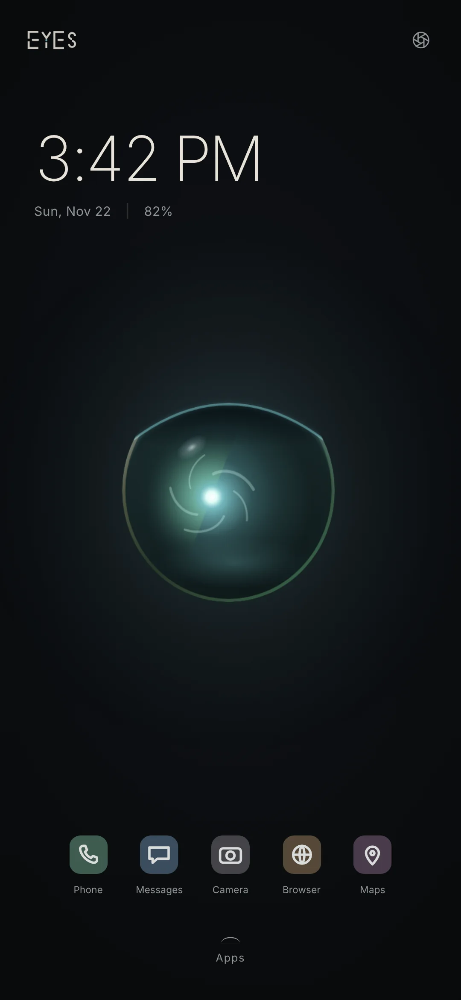
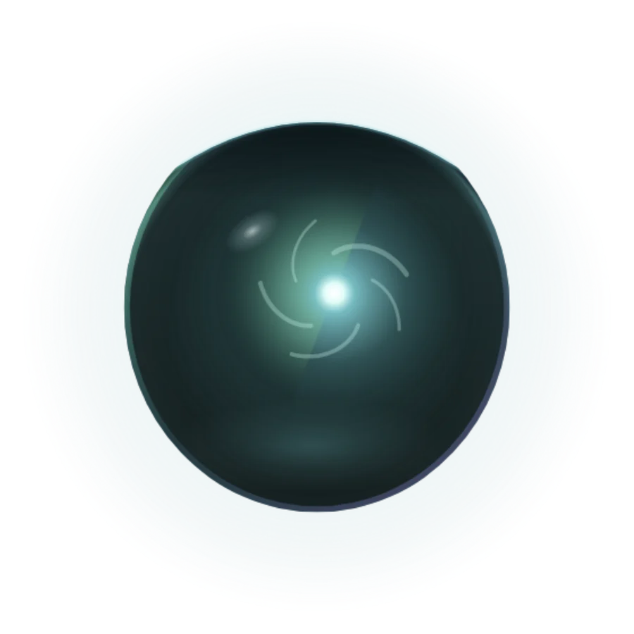
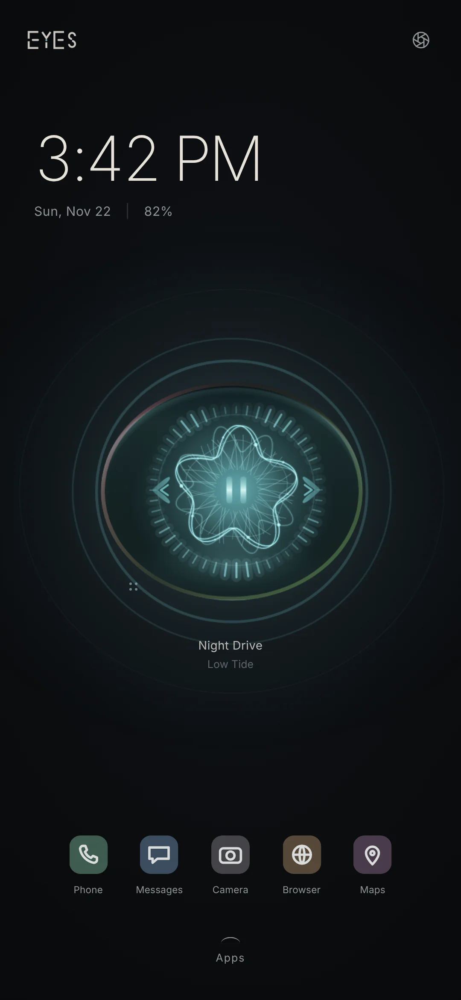
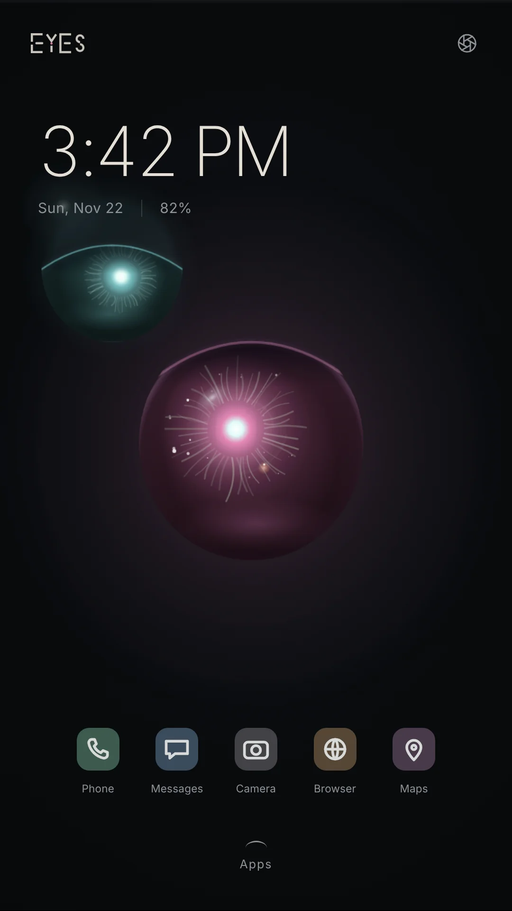
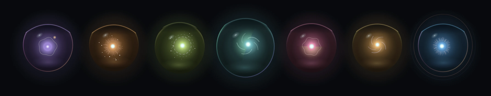
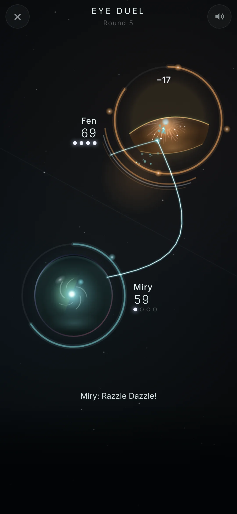
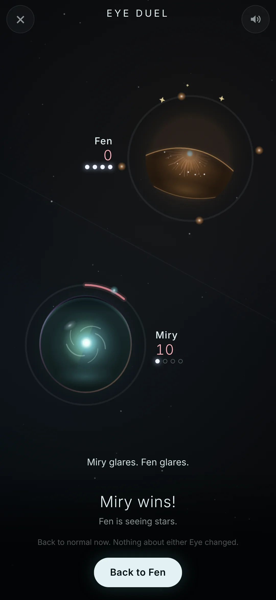

Android · homeIt feels alive.
It follows your finger, takes a breath, glances around, and recognizes the quiet moments between everything else.

Not another wallpaper. A small, strange presence with a life of its own. It notices things. It has moods. And when you connect with someone, your Eyes can meet.
A real creature from EYES · Android launcher + iPhone web app

Meet EYES
Choose one of three drifting lights. Hold it until it wakes. Whatever looks back is uniquely yours, and it won't look quite like anybody else's.
An unusual little creature experience that happens to live on your phone.
Not just a home screen
It's your Eye, with its own look and temperament. The moments are small. That’s the point.

Android · homeIt follows your finger, takes a breath, glances around, and recognizes the quiet moments between everything else.

Android · CymaticsOn Android, every track draws its own Cymatics figure inside the Eye. Playback controls are right there, while charging and notifications have their own reactions.

Connected Eyes · visitsSend a little signal while a friend is away, and your Eye might appear on their home screen when they return.

Different colours. Different temperaments. No two Eyes quite alike.
A little mischief
Challenge a friend's Eye to a quick turn-based duel. Pick your move, keep your cool, and find out what your creature's personality does under pressure.
No grinding, no lost creature. Just a ridiculous little showdown between friends.
Find your opponent ↗

Early access
One place to start. Choose your phone, wake your Eye, and see what happens.
Install the signed Android app. Give your Eye a home in the middle of your phone, with music, app shortcuts, and more.
↓ Download Android APKTo switch back, use Android Settings → Apps → Default apps → Home app. Only install software from sources you trust.
The iPhone companion web app gives you your own creature, Eye Contact, visits, Mirror and duels. No App Store download needed.
↗ Open EYES for iPhoneThe iPhone version is not a system launcher and cannot control other apps' music or read Android-style notifications.
EYES is an independent early-access experiment. Features vary by platform. Android installs directly from this website, outside the Play Store; the iPhone experience runs as a web app. Artwork shown is captured from the genuine app renderer, with representative demo app icons and content.
Little questions
A few things people ask when they first meet another Eye.
It's a short shared moment. Two connected Eyes turn toward each other, try to copy each other's movements, breathe together, and part. Their temperaments affect how it plays out.
Each is a wordless signal: Pulse is a warm beat, Spark is playful energy, and Calm is a gentle tide. If your friend's Eye is awake, it reacts. Otherwise the signal may become a visit when they return.
Yes. Both versions support Eye Contact. One person creates a private invite code and shares it with the other, who connects from their own Eye Contact screen.
Absolutely. On Android, change your default Home app in Settings → Apps → Default apps → Home app, or uninstall EYES.